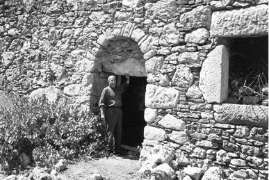

Anadolu’da Tevhid Nuru
Anadolu, bir Cuma vaktinde, kutlu bir zaman diliminde, tevhidin nuruna kavuşmuştu. Bizans nezdindeki hristiyanlar, Malazgirt’te Muhammed Alparslan’ın mü’min askerlerine mağlup olmuşlardı.
Tarihimizde, o eşsiz zaferlerimizin sesi mehterin nağmeleri bu güzelliği ne güzel seslendirmektedir:
Bir cuma sabahı Allah’a karşı,
Malazgirt’te elli dört bin er,
Söylediler en güzel marşı:
Allahu Ekber, Allahu Ekber!
Hazreti İsa’nın Havârîleri Anadolu’da
Hazreti Meryem vâlidemizin nur evladı Hazreti İsa Aleyhisselâm, Alparslan Gazi’den yüz yıllar önce yine nur için, yine tevhidin nuru için havârîlerini Anadolu iklimine göndermişti.
Havârîlerden birisi Antakya’ya ulaşırken, diğeri de Kıbrıs üzerinden Antalya-Isparta yoluyla Eğirdir, Nis, Bedre, İlama, Yalvaç ve Barla’ya ulaşıyordu.
Arz etmeye çalıştığım beldelerde Hazreti İsa Aleyhisselâm’ın havârîlerinin birçok eseri bulunmaktadır.
Barla’daki Ulu-Nur Çınarı’nın dibindeki antika sütun kâidesinden, Barla’nın sağ tarafından yükselen bir minare gibi sivri tepeye ve dağa Barlalılar “Öğlen Taşı” adını vermişlerdir. Bu dağın tepesinde ve bağrında bir sunak, yani mabed bulunduğu gibi, yine dağın tam orta yerinde Barla Kilisesi bulunmaktadır. Aşağılarda ise, bir hamamın kalıntıları yer almaktadır.
Barla’nın “Öğlen Taşı” denilen yüksek, dik ve sivri tepedeki sunak eskiden yel değirmeni olarak da kullanılırmış.
Sunak; “sunmaktan” geliyor bu isim. Mâbedlerde, kurban kesmek, ateş yakmak ve dinî merasim yapmak için kullanılan yüksekçe taştan masaya denir. Mısır, grek, romen, yahudi ve hristiyan sunakları olmak üzere çeşitleri vardır.
Barla, batı dillerinin anası ve kökü sayılan Latince’den gelmiş bir kelimedir. Saklanan, gizlenen ve kendisini örtüp kapatan anlamları vardır.
Ne ilâhî bir tevâfuk! Bugün dünyanın dört bir yanında, insanlığın dersi olan Nur Risaleleri’nin mümtaz bir vasfı, bir husûsiyeti çok ehemmiyetli bir tecellisi “Sırran Tenevverat”, yani “saklanarak ışığa kavuşma ve nurlanma, bu şekilde tenevvür etme”dir.
Yine bahsimizle alakalı olarak Isparta’nın Dere Mahallesi’nde bulunan ve “Sürmeli Hâfız” unvanlı Ahmed Mutaf Efendi, otuzlu senelerde Barla Lahikaları’ndaki bir nur mektubunda, nur Üstadına şunları yazmaktadır:
Dereli Hâfız Ahmed Mutaf’ın Mektubu
Isparta’nın Dere Mahallesi’nden olan bu zat, 1897’de Isparta’da dünyaya gelmişti. 1967 yılında ise yetmiş yaşlarında iken vefat etmişti. Isparta Nur Talebeleri’ndendir. 1943’de Üstadıyla birlikte Denizli’de mevkuf olmuş ve daha sonra da beraat etmişti. İstanbul’da hâfızlığa çalışırken kendisine “Sürmeli Hâfız” derlermiş.
Barla Lahikası’nda geçen mektup, Isparta’nın Dere Mahallesi’nde oturan Sürmeli Hâfız Ahmed Efendi’nin gördüğü nurlu bir rüyaya dairdir:
Dereli Hâfız Ahmed Efendi›nin çok mânidar rüyalı bir fıkrasıdır.
Aziz ve Müşfik Üstadım, Efendim!
Bir gün âlem-i menamda bir sahrada gezerken, birçok kalabalık ahalinin içine girdim. Dersim olan kelime-i tevhide devam ediyordum. O ahâlinin cümlesi nasârâ imiş. Biz âşikâre kelime-i tevhidi çektiğimizden hepsi bize iştirak etti. Her yüz başında, “Muhammedün Resûlullah” diyorum. O nasârâlar, “İsa Ruhullah” diyorlar. Onlara dedim ki: “Yahu, biz İsa’yı (aleyhisselâm) tasdik ediyoruz.” Ve kendilerine kelime-i tevhidi okudum, “İsa Ruhullah” dedim. “İşte bakınız, ben sizin peygamberinizi tasdik ediyorum. Siz de bizim peygamberimizi tasdik etseniz ne olur!” dedim. “Hayır! İsa (aleyhisselâm) gökten inmedikçe ve sizin peygamberinizi âşikâr tasdik etmedikçe biz tasdik etmeyiz.” dediler. Bunun üzerine yanımda iki arkadaş bulundu. Lâkin arkadaşlarım kimler olduğunu bilmiyorum. “Biz dua edelim de İsa (aleyhisselâm) gelsin ve bizi nasıl tasdik ediyor, göreceksiniz.” Dua ettik. İki kişi “Âmin!” dediler. Lâkin İsa (aleyhisselâm) gelmeyince müteessir olduk. Yine dua ettik, “Ya Rabbi! Bizi bunların yanında niçin mahcup çıkarıyorsun?” dedik. “Bu din âlî değil mi?”
Tahminen, arası bir saat veya bir buçuk saat sonra, karşıdan üç kişi çıktı. Elhamdülillâh, İsa (aleyhisselâm) geliyor. Baktım, birisi sakallı, ikisi şâbb-i emred. Dedim: “İsa (aleyhisselâm) otuz üç yaşında olduğu hâlde göğe huruç etti, niçin sakalında beyaz var?” Kalbime geldi ki, “Allahu a’lem, İsa (aleyhisselâm) değilse!” Bu zât ve iki arkadaşıyla yanımıza geldiler. Dikkatle baktım, üstadımızın simâsı ve elbisesidir. Bizim yanımıza gelince, bizim altımız mağara imiş. Yanındaki iki kişiye emretti: “Şurada kilitli salipler, haçlar var; cümlesini çıkarınız!” çıkardılar. Nasârâlara karşı hepsini kırdı ve kelime-i tevhid getirip Peygamberimiz’i tasdik edince, biz de nasârâlara, “Bakınız, işte İsa (aleyhisselâm) ’ın vekili geldi.” deyince cümlesi tasdik ettiler.
Allahu a’lem, bu rüyanın bir tâbiri şudur ki; Üstadımızın Kur’ân-ı Hakîm’den aldığı ve neşrettiği Risale-i Nur vâsıtasıyla nasârânın bir kısmı İslâmiyet’i kabul edecek ve nasârâ müslümanları veya hristiyan mü’minleri hükmüne geçip Üstadımızın sözlerini İsa’nın (aleyhisselâm) sözleri nev’inden hüsn-ü kabul edeceklerine işârettir.
Evet, Risale-i Nur’da öyle bir kuvvet vardır ki, Avrupa’nın en muannid filozoflarını dahi teslime mecbur eder. Her ruhun bir ihtiyac-ı hakikîsi olan hakikî iman nurunu arayan hristiyan muvahhidler, elbette Risale-i Nur’u görseler, (Hazreti İsa’nın (aleyhisselâm) vesâyâsı nev’inden) kabul edip sarılacaklardır. (Barla Lâhikası, s. 147-148).
Dereli Mutâf Hâfız Ahmed
Barla Dağları’nda İsa Aleyhisselam’ın havârîlerinin saklanarak
Allah’a ibadet ettikleri mâbed. Dağın (Öğlen Taşı) zirvesinde,
kayaların içine oyulmuş bir ibadet yerine ait iki farklı manzara

Barla Dağı’nın bağrında bir havârî kilisesi.